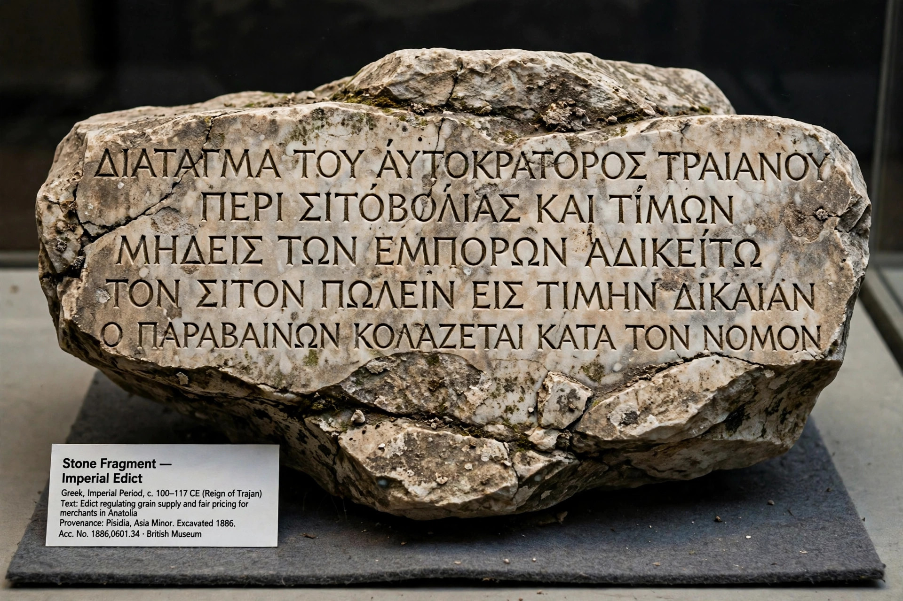

Diocletianic Persecution
| Diocletianic Persecution | |
|---|---|
| Date | AD 303–313 (to 311 in most regions) |
| Initiated by | Emperor Diocletian; urged on by Galerius |
| Key measures | Four edicts: destruction of churches and scriptures; arrest of clergy; universal sacrifice on pain of death |
| Ended by | Edict of Serdica (311); Edict of Milan (313) |

The Diocletianic Persecution, also called the Great Persecution, was the last and most severe persecution of Christians in the Roman Empire. Beginning with edicts issued by the emperor Diocletian in AD 303, it sought to destroy the Christian Church as an institution: churches were demolished, scriptures burned, clergy arrested, and all inhabitants of the empire were eventually ordered to sacrifice to the traditional gods on pain of death. Enforcement varied greatly by region — ferocious in the East under Galerius and Maximinus Daia, light in Gaul and Britain under Constantius Chlorus — and it ended with the Edict of Serdica in 311 and the Edict of Milan in 313, within a generation of Christianity becoming the empire's favoured religion.
Background
Diocletian's reforms emphasised traditional Roman religion and the divinity of the emperors (as Jovius and Herculius). Christians had already been purged from the army and court in the 290s. Ancient sources, especially Lactantius and Eusebius, blame the Caesar Galerius for pressing the reluctant Diocletian into general persecution in 302–303, after unfavourable oracles were said to have been obstructed by Christians making the sign of the cross.
The edicts
The first edict, published at Nicomedia on 24 February 303, ordered the demolition of churches, the burning of Christian books, the loss of legal rights and honours for Christians, and the dismissal of Christian household slaves who refused to apostatise. A second edict ordered the arrest of all bishops and clergy; a third offered imprisoned clergy freedom if they sacrificed. A fourth edict in 304 extended the command of universal sacrifice to the whole population, enforced by torture and execution. Diocletian's palace church at Nicomedia was demolished in view of the court, an event Eusebius witnessed and described in his Ecclesiastical History.
Martyrs and aftermath
The persecution produced many of the most famous martyrs of the early Church — among them Agnes, Sebastian, Lucy, George, and the Egyptian and North African martyrs whose acts were preserved. Numbers killed are uncertain; estimates for the empire as a whole run from hundreds to a few thousand. The persecution also split the Church: clergy who had handed over scriptures (traditores) or lapsed under pressure were the subject of the Donatist controversy in North Africa, and rigorist disputes over readmitting the lapsed (the lapsi) persisted for decades. In 311 the dying Galerius issued the Edict of Serdica grudgingly tolerating Christianity; in 313 Constantine and Licinius's Edict of Milan made it fully legal and restored confiscated property.
See also
Diocletian · Tetrarchy · Galerius · Edict of Milan · Donatism